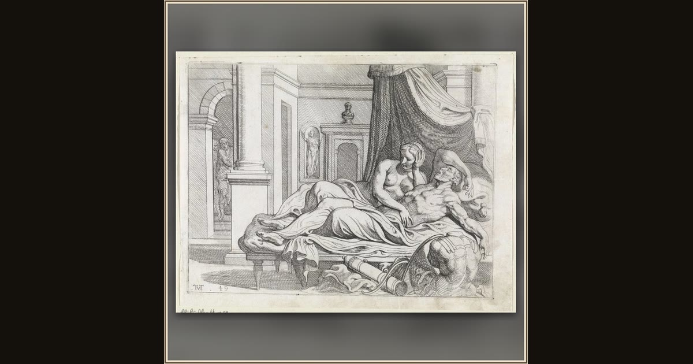

Penelope Doubts the Identity of Odysseus
Theodoor van Thulden, after Francesco Primaticcio · 1632–1633 · Rijksmuseum · Amsterdam, Netherlands
After twenty long years, wise Penelope carefully tests the ragged stranger to be truly certain he is her beloved husband come home. Explore its place in Book XXIII of the Odyssey.